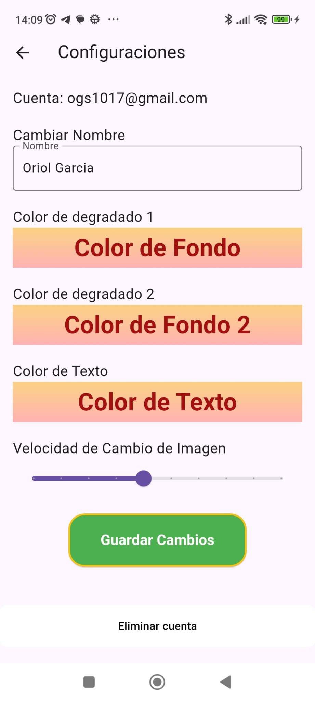

Guia pràctica de Sminos
Sminos és una aplicació de xarxes socials disponible a Google Play dissenyada per compartir imatges, text, enllaços i ubicacions d’una forma visualment única. El que la distingeix és el seu enfocament en la presentació de perfils en un format d’enjambre hexagonal, que fa que l’experiència sigui atractiva, intuïtiva i diferent de les plataformes tradicionals. A continuació, et detallo tot el que necessites saber per començar a fer servir Sminos:
Característiques principals de Sminos
- Disseny de perfils amb hexàgons
- Els perfils s’organitzen en un enjambre hexagonal, on pots afegir múltiples imatges.
- Cada imatge que pugis es converteix en un hexàgon dins del teu perfil, donant-li una estructura visual moderna i atractiva.
- L’enjambre no només reflecteix les teves publicacions, sinó que també et connecta visualment amb altres usuaris de la plataforma.
- Compartir diferents tipus de contingut
- Pots compartir més que imatges:
- Text per expressar-te o donar context.
- Enllaços a pàgines externes o recursos.
- Ubicacions per mostrar llocs importants o interessants.
- Explorar perfils d’altres usuaris
- Si un perfil crida la teva atenció a l’enjambre, pots fer clic per veure més detalls sobre aquella persona i explorar el seu contingut més a fons.
- Això fomenta connexions basades en interessos compartits i en el que cada usuari decideix mostrar.
- Interacció amb altres usuaris
- Encara que l’enfocament principal és el contingut visual i la informació que comparteixes, pots interactuar amb altres perfils a través del disseny intuïtiu de l’app.
- Components gratuïts i de pagament
- Sminos és principalment gratuïta, però inclou opcions de pagament que poden millorar la teva experiència (com funcions premium o avantatges addicionals). Sminos Plus permet navegar sense anuncis, crear imatges amb IA i permet posar més d’un tipus de contingut, és a dir, posar més d’un text, posar més d’una ubicació o posar més d’un enllaç.
Com començar a usar Sminos
- Descarrega l’app
- Vés a Google Play i cerca "Sminos". Descarrega-la i instal·la-la al teu dispositiu Android.
- Crea el teu perfil
- Un cop instal·lada, crea el teu compte. Podràs configurar el teu perfil afegint imatges, text i més elements que representin qui ets.
- Assegura’t d’afegir imatges interessants, ja que aquestes formaran els hexàgons del teu enjambre.
- Explora l’enjambre global
- En entrar, trobaràs una xarxa visual d’hexàgons que representen perfils d’altres usuaris.
- Fes clic sobre els hexàgons per explorar altres perfils i connectar amb gent que comparteixi els teus interessos.
Preguntes freqüents
- Com puc contactar amb el suport de Sminos? Pots contactar amb el nostre suport a través de la secció “Suport” dins de l’app o mitjançant el nostre correu electrònic de contacte.
- És Sminos totalment gratuïta? Sí, però hi ha opcions de subscripció premium que ofereixen funcions addicionals. La versió gratuïta segueix sent completa i funcional.
Desitgem que gaudeixis d’una gran experiència amb Sminos! No dubtis a explorar tot el que l’app té per oferir i connecta amb altres persones d’una manera innovadora i visual.
Consells per aprofitar al màxim Sminos
- Cuida la teva selecció d'imatges
- Les imatges són la base del teu perfil. Pujar contingut visual atractiu pot ajudar-te a destacar dintre del ramat.
- Sé estratègic amb els enllaços i ubicacions
- Si comparteixes enllaços, assegura't que siguin rellevants per a la teva audiència.
- Utilitza la funció d'ubicació per destacar llocs interessants o relacionats amb la teva vida.
- Explora i connecta
- La plataforma està dissenyada per facilitar descobriments. No dubtis a explorar altres perfils i connectar amb persones que comparteixin els teus interessos.
Com utilitzar l'aplicació
Un cop iniciada la sessió hi ha 5 pestanyes inferiors:
- Colmena: La primera pestanya inferior és la colmena amb tots els usuaris. A la part inferior esquerra hi ha un botó d'actualització per tornar a carregar els usuaris del ramat de manera aleatòria.

Els botons a l'esquerra i dreta en forma de fletxa serveixen per anar a la pantalla d'enquesta sobre l'emoticona que representa l'emoció dels usuaris en un moment determinat.
- Amics: La segona pestanya inferior és la dels amics, similar a la primera pestanya però aquí només es mostren els usuaris que estàs seguint perquè t'interessen.

En aquesta pestanya també hi ha l'enquesta quan es prem sobre les pestanyes laterals però el percentatge és només sobre els usuaris que segueixes.
En ambdues pestanyes (Colmena i Amics) quan es prem sobre un hexàgon es mostra el perfil complet d'aquest usuari.

- Selector: A la tercera pestanya inferior hi ha un selector per distingir les imatges que t'agraden de les que no amb totes les fotos de tots els usuaris. Si l'hexàgon es llisca cap a l'esquerra significa que no t'agrada i si es llisca cap a la dreta significa que t'agrada.

- Xat: A la quarta pestanya inferior hi ha el Xat, on es mostra el llistat de tots els xats i es pot entrar a cadascun d'ells, en el xat es pot compartir un missatge de text, una imatge, un vídeo o també un missatge de veu. Els xats no llegits es marquen en verd.

- Compte: I per últim, a la cinquena pestanya inferior es troba el compte, on es poden veure els detalls del compte, es poden consultar els teus amics i canviar la contrasenya. També és possible veure les enquestes realitzades a la resta d'usuaris i les teves respostes.
També per afegir imatges al perfil propi hi ha 3 possibilitats que estan representades als botons flotants de la cantonada inferior dreta.
El botó flotant que es troba a la dreta i de color verd és per penjar una imatge de la biblioteca del mòbil, el que està a la dreta abaix és per fer una foto directament amb la càmera. I el botó que està a sobre d'aquest botó serveix per crear imatges amb intel·ligència artificial i només està disponible si ets subscriptor de Sminos Plus.
En afegir una nova imatge, sigui de la manera que sigui, es pot acompanyar d'un text. Aquesta imatge podrà rebre "m'agrada", ja sigui amb el selector o quan un altre usuari interactuï amb el perfil.
Apartat opcions:
A la part superior dreta d'aquesta pestanya (Compte) es troben 3 puntets. En clicar-hi sobre ells s'obre un "drawer" per realitzar diferents configuracions o obtenir certa informació de l'usuari.

Opcions del lateral de la pàgina Compte:
- Actualitzar a plus
- En aquest apartat es pot actualitzar a Plus, hi ha dos tipus de subscripcions, la mensual o l'anyal, l'anyal és proporcionalment més barat.

- Configuració
- En aquest apartat es pot canviar el Nom d'usuari, el color de fons degradat superior, el color de fons del degradat inferior, el color del text i la velocitat de canvi d'imatges. També és des d'on l'usuari pot eliminar el compte si així ho desitja.

- Com es veu el meu perfil?
- En aquest apartat l'usuari pot veure com es veu el seu propi perfil des de la colmena d'altres usuaris. No es pot interactuar amb un mateix.
- Puntuació i difusió de l'app
- En aquest apartat l'usuari pot accedir a la Play Store per puntuar i difondre l'app per WhatsApp.

- Opcions d'idioma
- En aquest apartat es pot seleccionar l'idioma de tota l'aplicació. Es pot seleccionar qualsevol d'aquests idiomes: Espanyol, anglès, francès, portuguès, italià o català.

- Ajuda
- Aquest és l'apartat on es mostra la guia de l'app i un Agent de veu per resoldre qualsevol dubte.
- Tancar sessió
- Aquest botó serveix per tancar sessió a l'app i sortir del mode loguejat
FAQ’s
- Què és el primer que he de fer en iniciar sessió a aquesta app?
- És important pujar fotografies i contingut al perfil per garantir la qualitat de l'app. En cas contrari, els usuaris que no configurin el seu perfil o facin un mal ús seran eliminats.
- Si inicio sessió amb correu electrònic en lloc del proveïdor de Gmail, què he de fer?
- És important que si inicies sessió amb correu i contrasenya verifiquis el teu correu electrònic. Al teu perfil es mostrarà un botó que diu “verificar correu electrònic”, que en prémer-lo enviarà un correu al teu correu electrònic per poder verificar-lo. Un compte sense verificar no es mostrarà a la colmena.
- Com pujar fotos?
- Prem algun botó flotant de la pestanya Compte, com el de pujar des de galeria, el de fer una foto directament o bé el de crear una imatge amb IA (només disponible en Plus).
- Si estic subscrit a Plus, com puc verificar-ho?
- Ves a l'apartat de subscripció i subscriu-te o, si ja ho estàs, espera que el sistema ho actualitzi. Si tens problemes amb això, assegura't de tenir l'última versió instal·lada.
Quines avantatges té Sminos Plus?
- Contingut sense anuncis, creació d'imatges amb IA i més d'un tipus de bloc de contingut per al perfil.
Qui pot veure el meu perfil?
- Tothom que tingui l'aplicació, ideal per donar-se a conèixer ràpidament.
Recomanacions
- Tindré un bon perfil treballat en colors, contingut de perfil i imatges o fotografies.
- Difondre l'aplicació.
- Passar-se a Plus per a una millor experiència sense anuncis i més funcionalitats.
Està disponible per a IOS?
- No, encara no ho està però no es descarta per al futur.
Descarregar l'aplicació
Pots descarregar Sminos des de Google Play cercant directament "Sminos" a la botiga d'aplicacions del teu dispositiu Android.